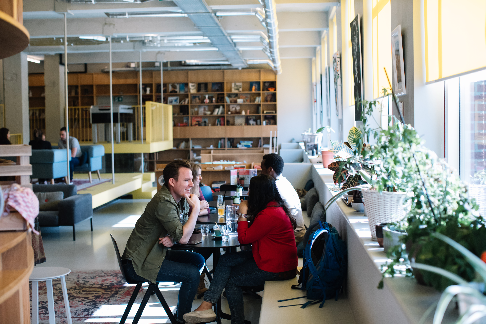

Chào mừng đến với nhà hàng Asia Như Ngọc, nơi mang phong cách ẩm thực Việt Nam đương đại dựa trên sự chắt lọc tinh hoa của ẩm thực truyền thống Việt Nam và châu Á được phát triển và quản lý bởi gia đình Nhị - Chúc.

Nhà hàng đầu tiên của chúng tôi đã khai trương tại Obernstr. 27 - 33602 Bielefeld, Đức vào tháng 08/2016 và nhận được sự yêu mến, ủng hộ của nhiều thực khách.

Tháng 8/2017, sau 1 năm ghi dấu thành công cùng thực khách Việt Nam tại Đức, chúng tôi hân hạnh mở rộng quy mô nhà hàng thứ hứa hẹn mang đến cho mọi du khách những trải nghiệm đặc sắc với nhiều món ngon, nhiều lựa chọn chỉ có thể tìm thấy ở Gia Viên.